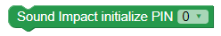

BlocklyProp reference for SOUND IMPACT SENSOR blocks


 These blocks are for Parallax's Sound Impact Sensor (#29132) and the Propeller Activity Board WX, FLiP, or Other board types. Not available for Badge or Scribbler Robot board types.
These blocks are for Parallax's Sound Impact Sensor (#29132) and the Propeller Activity Board WX, FLiP, or Other board types. Not available for Badge or Scribbler Robot board types.
New to this sensor? Click here to see an example schematic and quick Blockly program to help you get started
Sound Impact initialize

 This block lauches a processor automatically. Use only instance of this block per project.
This block lauches a processor automatically. Use only instance of this block per project.
The Sound Impact initialize block sets up the Sound Impact sensor. If you forget this block, the other Sound Impact sensor blocks will display a triangle warning icon as a reminder:
- In the PIN dropdown, select the Propeller I/O pin connected to the Sound Impact Sensor's signal pin.
Sound Impact get count
The Sound Impact get count block returns how many sound impacts (loud sounds) were detected since the last time this block was used. If no sound impacts were detected, it provides a value of zero.
Sound Impact close

The Sound Impact close block makes the Propeller microcontroller stop listening to the Sound Impact sensor and frees up the resources it was using inside of the Propeller.